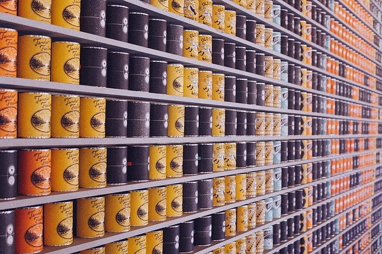

Dada la clase Producto, implementa un programa en Java donde se cree una lista de objetos de este tipo para a continuación rellenarla con la siguiente información y en el siguiente orden:
1. {sardinas , 31/12/2023, 1,50}
2. {caballa , 25/12/2023, 1,70}
3. {navajas , 01/01/2021, 2,40}
4. {mejillones, 11/01/2022, 2,10}A continuación, ordenar la lista conforme a tres criterios diferentes:
- por nombre del producto;
- por fecha de caducidad del producto;
- por precio del producto.
Para ello habrá que implementar tres clases que implementen la interfaz Comparator que nos permitan ordenar esa lista en función de tres criterios diferentes:
- clase
ComparadorProductosPorNombre; - clase
ComparadorProductosPorCaducidad; - clase
ComparadorProductosPorPrecio.
Puedes escribir las tres clases dentro del propio archivo del ejercicio, fuera de la clase principal.
En la clase principal, tendrás que implementar el programa principal (método main) que llevará a cabo las siguientes acciones:
- crear una lista de productos (objetos instancia de la clase
Producto); - rellenar la lista con los cuatro productos indicados (sardinas, caballa, navajas, mejillones) y en ese orden;
- mostrar el contenido inicial de la lista recorriendo cada elemento y mostrándolo en una línea diferente;
- llevar a cabo la ordenación de la lista utilizando el comparador por nombre;
- recorrer de nuevo la lista y mostrar cada elemento en una línea diferente;
- llevar a cabo una nueva ordenación de la lista utilizando el comparador por fecha de caducidad;
- volver a recorrer la lista y mostrar nuevamente sus elementos ordenados con el nuevo criterio;
- realizar una última ordenación utilizando el comparador por precio;
- mostrar por última vez el contenido de la lista ordenada por este tercer criterio.